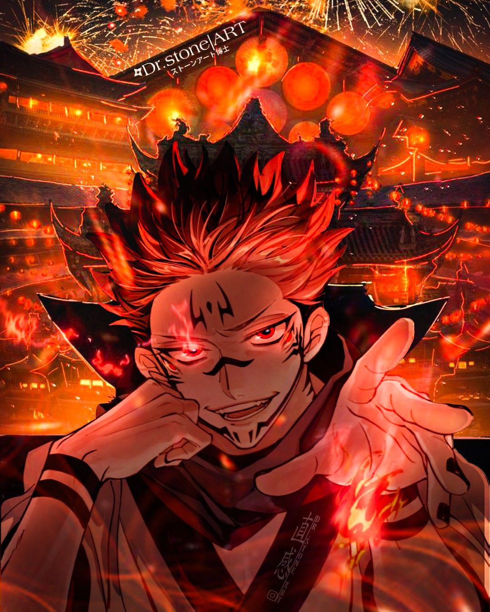

Ryomen Sukuna
A Historia de Ryomen Sukuna
Antes do sukuna ser considerado por todos dentro do universo de jujutsu kaisen de "O Rei Das Maldições"o Riomen Sukuna era um Xamã/feitiçeiro, pois nasçeu no mundo como um homen tirano,arrogante e egoista que se importa com nada mais que seu proprio "ser",ego e poder,
o Sukuna embora possa ser tirano ainda tem respeito pelos os que ele considera de "Os xamãs mais fortes" como por exenplo os antigos xamãs da era de heian ou da nova era e tamben os que ele mesmo considera uteis (EX: Megumi Fushiguro), como forma de demonstra seu respeito o sukuna chama o xamã ou maldição pelo nome cmo por exxemplo o honrado Satoro Gojo ou a maldição
Jogo e sua serva Uraume mais não se engane pois o Ryomen sukuna trata diferente as pessoas que ele mesmo julga fracos como por exemplo no inicio da obra/manga que o sukuna chamava o Yuji Itadori de "Moleque" ou "Pirralho"
